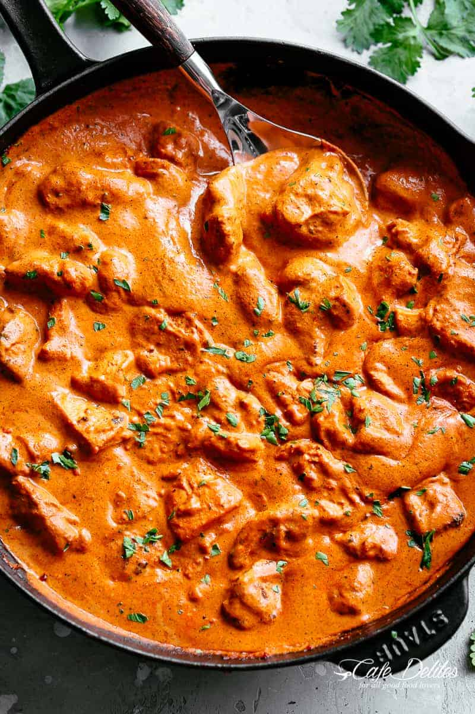

Butter Chicken

Description
A milder curry when compared to other Indian curries makes Butter Chicken a favourite among families with little ones. You can certainly add as much or as little chili as you wish. In other words, YOU are in total control of how spicy you make it.
You can use boneless, skinless chicken thighs or breasts. We prefer dark meat, but go with what you like.
Ingredients
- Plain Yogurt
- Fresh Garlic
- Ginger
- Onion
- Can of crushed tomatoes
- Garam Masala
- Tumeric
- Cumin
- Red Chili Powder
- Salt
- Cream
Steps
- Mix yogurt marinade together by adding plain yogurt, fresh garlic, ginger, garam masala, tumeric, cumin, red chili powder, and salt.
- Marinate chicken for 20 minutes, or overnight if time allows.
- Sear chicken in a skillet or pan. Keep those charred bits on the pan to make your sauce. Browned bits = flavour. If you have too many burnt pieces stuck to the pan, you can discard some of them if you wish.
- Cook tomatoes cook for at least 10-15 minutres until they are almost dry. Additionally, you can add in a couple tablespoons of water if it dries too early.
- Blend an onion, a can of crushed tomatoes, garlic, ginger, garam masala, cumin, red chili powder, salt, and the cooked tomato until it's smooth, and pour it into the same pan you used to sear the chicken.
- Add in cream (heavy whipping cream or thickened cream). You can use evaporated milk or half and half for a lower calorie option.
- If you want a richer sauce, feel free to add a couple tablespoons of butter (or ghee) right at the end, letting it melt through the sauce before serving.